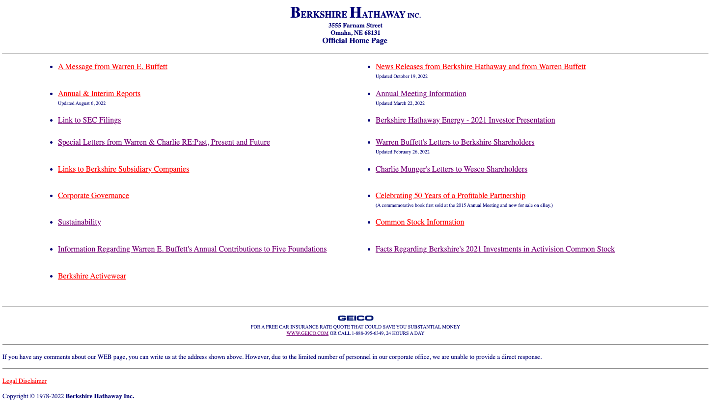
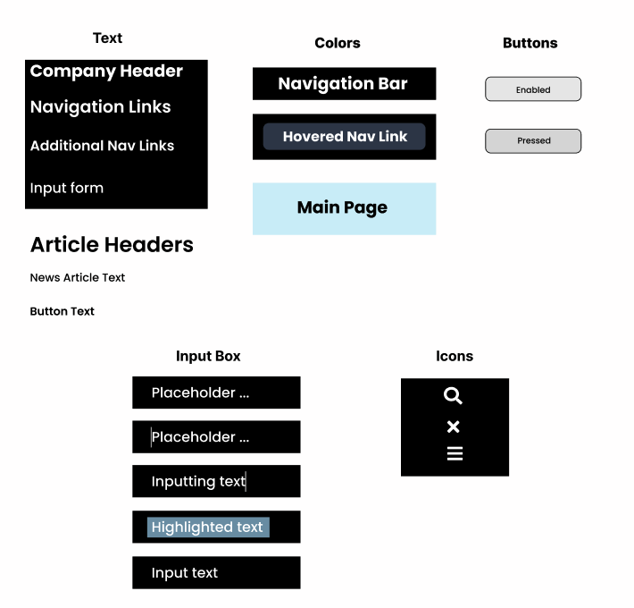

Berkshire Hathaway Website Responsive Redesign
Background
For this project, I found a poorly designed website and analyzed it's issues with respect to memorability, learnability, usability, and accessibility. Next, I prototyped a redesign for the website for desktop, tablet, and mobile layouts. Finally, I built and deployed the redesigned website using HTML and CSS.
Website Usability Problems
I chose to look at the Berkshire Hathaway Website, linked here. Below is a screenshot of the homepage. 
I chose this website because there are glaring issues with the accessibility and organization of the homepage.
Usability Problems
Here are some usability problems with the website I noticed:
Accessibility Problems
Next, I used WebAIM WAVE to detect possible accessibility problems. The main accessibility problem that WAVE found was that the text that indicates when a section was updated is too small. I agree that this is an issue, as I personally had trouble reading. A related problem that WAVE identified was that the headings are stored as an unordered list and are not represented as heading elements; this makes the website very hard to navigate and negatively affects the accessibility. Finally, WAVE pointed out that there is no lang attribute value and that none of the page regions have ARIA landmarks; these both negatively affect the user experience of anyone trying to navigate the page with assistive technology.
Visual Redesign
Low-Fidelity Wireframing
During the redesign process, I first created lo-fi wireframes to address the usability problems found above. I created wireframes for desktop, tablet, and mobile layouts.
Desktop
Tablet

Mobile

Visual Design Style Guide
Before doing a hi-fi prototype of the redesigned webpage, I defined a visual design guide that displays the main colors, typography, and reusable components for the redesigned webpage.
High-Fidelity Prototyping
I next designed high-fidelity prototypes for my redesigned webpage for desktop, tablet, and mobile displays. Some displays included multiple prototypes in order to fully display the interactive functions of my webpage, such as the navigation bar.Desktop
Tablet
Mobile
- Why did you choose the self-checkout station instead of the cashier-checkout station?
- Did the self-checkout station interface perform as you expected? If not, which parts were confusing?
- What were the easiest and hardest tasks to accomplish using the interface?
- How did you feel while using the self-checkout station?
Summary of Responses
Personas
Rushed Student

The rushed student takes five classes at Brown University and is getting toiletries and snacks for their dorm. This user struggles with placing items in the correct area of the self-checkout station and starting the payment process on the display. This persona represents users I observed who were in a hurry and hoping to use the self-checkout station so that they could leave the store quicker. They also represent users who struggled with misplacing items or forgetting to scan items due to their rushed interaction with the interface.
Cautious Shopper

The cautious shopper lives walking distance from CVS and has a list of items they want to buy after doing research online. This user primarily struggles with figuring out how to undo mistakenly scanned items and selecting a payment method. This persona represents users I interviewed who were nervous about using the self-checkout station due to concerns that they would be flagged for stealing items, when in reality they were just confused with the interface. This persona also represents users who were hesitant to use the self-checkout station in case they needed help or made a mistake.
Storyboard of Self-Checkout Station